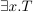
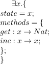

存在型¶
全称型, System F なら知っている人も多かろう． しかし存在型とは聞き慣れない型だ．プログラミングではあまり使わなかろう． 論理学ではよく使うみたいだ．存在型は， ∃ という記号を使ってあらわされる． 存在型は，型システム入門の 24章 で触れられている．読んでみてほしい．
パッケージシステム¶
存在型がなんなのかはよくわからない．そこで直感的な例としてパッケージシステムで 考える．いま，パッケージシステムでしたいことは，型の隠蔽だ．型を隠蔽したい，というのは， たとえば list というパッケージがあって， list.t という型がある． head : 'a list.t -> 'a という関数や， tail : 'a list.t -> 'a list.t という関数は提供したいが， list.t 自体は提供したくない．そういった場合， どうすればよいだろうか．
そこで，まず， list.t を x， head や tail を持つパッケージを T だということにして，
と書く．T を満たす x が存在する，と読む． いまや head のシグネチャは head : 'a x -> 'a ということになる．T を具体的に書けば

のようになる．ついでに， nil や cons も最初からあるということに しておいた． x はなんだかわからないけど，とにかく存在する型だ． forall のようにすべての型をそこに置換してよいわけではない． x の部分に置換してよい型は高々ひとつだろう． head はその x(α) というものを 受け取って， α を返すのだ．
x がどんな型かみんなは知らない．でも， nil が x(α) という型を持つことは知っている． だから， λx:α.cons x nil はやはり合法で，それもまた α→x(α) という肩を持つことがわかる． このようにして，見知らぬ隠蔽された x という型をやり取りするパッケージができる．
JavaScript のクロージャにたとえると，直感的に理解しやすいかもしれない．
var p = (function () {
var x = /* list.t の定義 */;
return {
head: /* .. */,
tail: /* .. */,
nil: /* .. */,
cons: /* .. */
}
})()
存在型オブジェクト¶
型システム入門によれば，存在型を用いてオブジェクト指向的なデータ抽象ができるらしい．
全称型で存在型をつくる¶
全称型があれば存在型も実装できる (らしい)． 正直なところ，まだこのあたりはよくわからない． そして，これはもはや記号論理の範疇に突入しているように思える． 全称型で存在型をつくるのは，記号論理入門という本にも書かれていた． 気が向いたら読んでみてほしい．